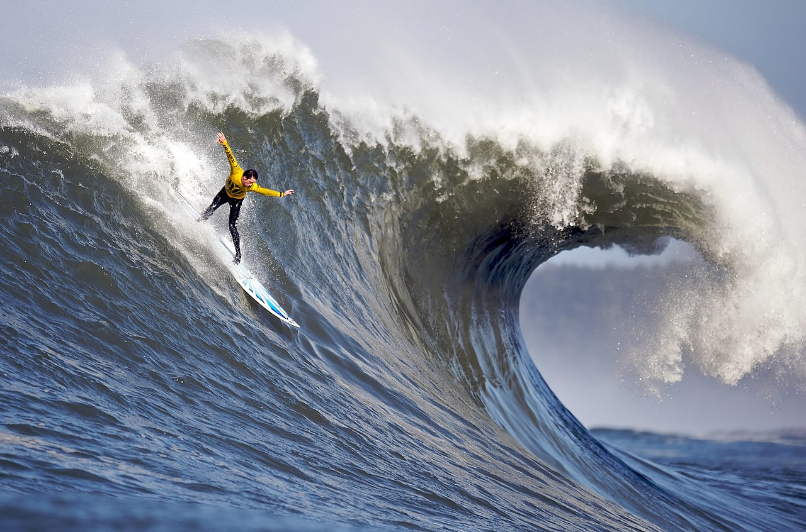

Mavericks
Answer the following questions on your page:
1. What kind of photos are good to encode using JPEG?
JPEG is ideal for complex photos with a wide range of colors as it supports millions of colors making it suitable for images with intricate color details.
2. What kind of photos are good to encode using GIF?
GIF is best for images with few colors such as logos, icons, and graphics with solid colors and sharp edges. It is also suitable for simple animations making it a good choice for short and looping animations.
3. What is unique about the PNG format?
PNG uses lossless compression, meaning that the image quality is preserved without losing any data, which is ideal for images that require high quality, such as graphics and text. It also allows varying levels of transparency.
4. How do you resize your photo to the size it should be displayed?
You can resize a photo by using photo editing software like Photoshop, GIMP, or any other editing tool. Make sure the aspect ratio is maintained so the image will not be distorted.
5. Why should you resize photos using photo editing software instead of resizing it using CSS?
You should resize photos using photo editing software because it retains the image quality better than CSS as CSS can lead to pixelation and blurriness. It also significantly reduces file size which improves the loading times and allows you to be more flexible in adjusting the photo appearance.